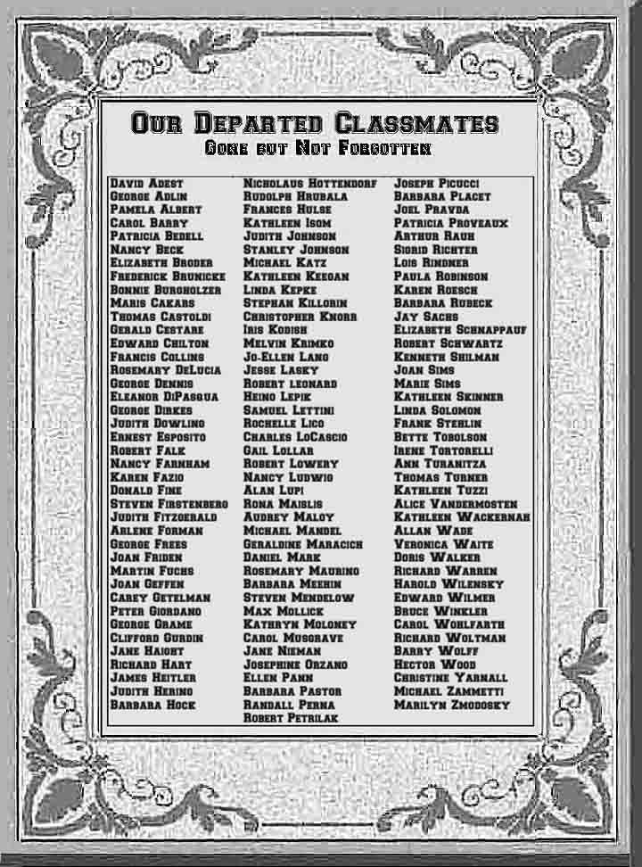

<!-- saved from url=(0046)http://www.1960sailors.net/10d_in_memoriam.htm -->
<html><head><meta http-equiv="Content-Type" content="text/html; charset=windows-1252">

<meta name="GENERATOR" content="Microsoft FrontPage 6.0">
<meta name="ProgId" content="FrontPage.Editor.Document">
<title>Memorial Monument</title>
<!--<base target="_self">--><base href="." target="_self">
  <div align="left">
    <div align="left">
		<table border="0" cellpadding="0" cellspacing="0" width="800" id="table4">
			<!-- MSTableType="nolayout" -->
			<tbody><tr>
				<td>
				<div align="left">
					<table border="0" cellpadding="0" cellspacing="0" width="44%" id="table5">
						<tbody><tr>
							<td width="12%" valign="top">
							<p align="center" style="margin-left: 0px; margin-right: 4px"><b>
							<font face="Times New Roman" color="#000080" size="3">
							</font></b></p></td>
							<td valign="top" align="left">
							<table border="0" cellpadding="0" cellspacing="0" width="76%" id="table11">
								<tbody><tr>
									<td bgcolor="#6C6C6C" align="left">
									<p align="center"><b>
								</tr>
							</tbody></table>
							</td>
							<td width="13%"><b><font size="6" color="#ffffff">
							</font></b></td>
						</tr>
					</tbody></table></div>
				<div align="left">
					<table border="0" cellpadding="0" width="100%" cellspacing="0" id="table6">
						<tbody><tr>
							<td width="100%" valign="middle" align="center" height="44">
							<font size="1" color="#666666">
							&nbsp;&nbsp;&nbsp;&nbsp;&nbsp; <br>
							</font><font face="Arial"><b><font color="#000080">
				<br>
							</font></b></font><b>
							<font face="Arial" color="#000080" style="background-color: #EAEAEA; font-size:13pt; font-variant:small-caps">
							<dfn>And Our Fondest Memories Are of Each Other</dfn></font></b><span style="background-color: #EAEAEA; font-weight:700; "><font color="#666666" face="Lucida Calligraphy" style="font-size: 15pt; font-style: italic"><br>
							</font>
							<font color="#666666" face="Lucida Calligraphy" style="font-style: italic" size="1">
							<br>
							</font>
							<font color="#666666" face="Lucida Calligraphy" style="font-size: 15pt; font-style: italic">The 
worst part of growing older is not getting sick and disabled yourself;<br>it is 
losing the people you care about.</font></span></td></tr>
						<tr>
							<td width="100%" valign="middle" align="center" height="88">
							<table border="0" width="102%">
								<tbody><tr>
									<td width="184">
							<font color="#000080">
							<span style="background-color: #EAEAEA">
							<font size="6">
							</font></span></font></td>
									<td>
									<p style="margin-right: 20px; line-height:18pt">
									<font color="#000080">
									<span style="background-color: #EAEAEA">
									<font size="6">
									B</font><font style="font-size: 15pt">efore 
leaving our site, why not take a moment to reflect quietly upon the memories </font></span></font>
											<font color="#000080" style="font-size: 15pt">
											<span style="background-color: #EAEAEA">
							<font face="Times New Roman">&#9472;</font></span></font><font style="font-size: 15pt; background-color:#EAEAEA" color="#000080">&nbsp;<b><i>pressed between the pages of our
minds</i></b> </font>
											<font color="#000080" style="font-size: 15pt">
											<span style="background-color: #EAEAEA">
							<font face="Times New Roman">&#9472;</font></span></font><font color="#000080"><span style="background-color: #EAEAEA"><font style="font-size: 15pt">&nbsp;of these departed classmates, fallen Sailors 
							and friends whom we remember both collectively and 
							individually, some of
whom may have been part of our class for only a short time, some of whom may have been among your closest and dearest friends at some time in the
near or distant past, some of whom you may have barely known, many of whom you haven't seen since 1960 </font>
							<font face="Arial" style="font-size: 15pt">�</font></span></font><font color="#000080" style="font-size: 15pt"><span style="background-color: #EAEAEA"> 
							or even earlier&nbsp;</span></font><font face="Arial" style="font-size: 15pt; background-color:#EAEAEA" color="#000080">�</font><font color="#000080" style="font-size: 15pt"><span style="background-color: #EAEAEA">&nbsp;and 
							sadly, none of whom will you ever see again.</span></font></p></td>
								</tr>
							</tbody></table>
							</td></tr>
						<tr>
							<td width="100%" valign="middle" align="center" height="12">
							<font style="font-size: 6pt">&nbsp;&nbsp; </font></td></tr>
						<tr>
							<td width="100%" valign="middle" align="center" height="176"><b>
							</b><blockquote><b>
								</b><blockquote><b>
									</b><p class="p1" style="tab-stops: 1.5in; "><b>
									<span style="background-color: #EAEAEA; mso-bidi-font-weight:bold">
									<font face="Cambria" color="#666666">
									<span style="font-size: 13pt">&nbsp;</span></font></span><span style="font-size: 13pt"><span style="background-color: #EAEAEA"><font color="#666666" face="Cambria">Our memories may be fading a
bit &#9472; but 
									<a name="we remember them">we remember them</a>.</font></span><font color="#666666" face="Cambria"><span style="background-color: #EAEAEA">
									<br>Some 
			were very popular,
			and some were not, <br></span></font>
									<span style="background-color: #EAEAEA">
									<font color="#666666" face="Cambria">Many have not been seen nor
			heard from 
				since 1960,</font></span><font color="#666666" face="Cambria"><span style="background-color: #EAEAEA"><br>&nbsp;All are gone too soon, but they are yet a part of us,<br>And 
									</span></font></span></b>
									<font face="Cambria" color="#666666">
									<span style="background-color: #EAEAEA; font-weight:700; font-size:13pt">
									we 
			remember them</span><b><span style="font-size: 13pt; background-color: #EAEAEA">. 
									</span></b></font></p>
									<p class="p1" style="tab-stops: 1.5in; ">
									<font color="#666666"><b>
									<span style="background-color: #EAEAEA">
									<font face="Cambria">
									<span style="font-size: 13pt">At the rising of the sun
and at its <span style="mso-bidi-font-style:">going</span><span style="mso-bidi-font-style:
normal"> </span>down, we remember them.</span></font></span><span style="mso-bidi-font-style:"><span style="background-color: #EAEAEA"><font face="Cambria"><span style="font-size: 13pt">
									<br>At the blowing of the wind and in the chill of 
							winter, we remember them.</span></font><o:p></o:p></span><font face="Cambria" style="font-size: 13pt"><span style="background-color: #EAEAEA"><i><br>
									</i>At the opening of the buds and in the rebirth of 
							spring, we remember them.<i><br></i>At the shining 
							of the sun and in the warmth of summer, we remember 
							them.<br>At the rustling of the leaves and in the beauty of 
									<span style="mso-bidi-font-weight:bold">autumn</span><b style="mso-bidi-font-weight:normal">,
									</b>we remember them.<br>At the beginning of the 
							year and at its end, we remember them.
							<br>As long as we live, they too will live, for they 
							are now a part of us,
<br>as we remember them.</span><span style="background-color: #EBEBEB">
									</span></font></span></b></font><b></b></p><b>
								</b></blockquote><b>
							</b></blockquote><b>
							</b></td>
						</tr>
						<tr>
							<td width="100%" valign="middle" align="center" height="160">
							<blockquote>
								<blockquote>
									<b>
									<span style="mso-bidi-font-style:; background-color:#EAEAEA">
									<font face="Cambria" color="#666666">
									<span style="font-size: 13pt">W</span></font></span><span style="background-color: #EAEAEA"><span style="mso-bidi-font-style:"><span style="font-size: 13pt"><font face="Cambria" color="#666666">hen 
							we are weary and in need of strength, we remember 
							them.<o:p><i><br></i>When we are lost and sick at heart, we remember 
							them.<i><br></i>When we have joy we crave to share, we remember 
							them.<i><br></i>When we have decisions that are difficult to make, 
									</o:p></font>
									</span>
									<span style="mso-bidi-font-weight:bold">
									<font face="Cambria" color="#666666">
									<span style="font-size: 13pt">we
remember them.</span></font><font face="Agency FB" size="5" color="#808080"><i><o:p></o:p></i></font><font face="Cambria" color="#666666"><span style="font-size: 13pt">
									</span>
									</font></span>
									<span style="font-size: 13pt">
									<font face="Cambria" color="#666666">
									<i><br></i>When
we have achievements that are based on theirs, we remember them.<i> </i></font>
									</span>
									</span><span style="font-size: 13pt">
									<font color="#666666"><i>
									<span style="mso-bidi-font-style:">
									<font face="Cambria"><br></font>
									</span></i>
									<span style="mso-bidi-font-style:">
									<font face="Cambria">As
long as we live, they too will live, for they are now</font></span><font face="Cambria">
a part of us,<i><br></i>as we remember them.</font></font></span></span><font face="Cambria" color="#666666"><span style="font-size: 13pt">
									</span>
									</font></b>
								</blockquote>
							</blockquote>
							</td>
							</tr>
							<tr>
							<td width="100%" valign="middle" align="center">
							<p align="right" style="margin-right: 45px">
							<span style="font-size: 13pt; background-color: #EAEAEA">Adapted from a Jewish 
							poem</span><span style="font-size: 13pt"><b><span style="background-color: #EAEAEA">
							</span></b>
							</span>
							<span style="font-size: 13pt; background-color: #EAEAEA">written in the 1960s by Rabbis 
							Sylvan Kamens and Jack<br>
							Reimer
							and commonly 
							recited during memorial services on <i>Yom Kippur</i> and 
							other holidays.</span></p></td>
							</tr>
							<tr>
							<td width="100%" valign="middle" align="center">
							<p align="right" style="margin-right: 15px">
							&nbsp;</p></td>
							</tr>
						<tr>
							<td width="100%" align="center" height="77" bordercolor="#000080">
										<p align="justify" style="line-height: 18px; margin-right:45px">
							<i>
							<font face="Arial" color="#232323">
							<span style="background-color: #EBEBEB">Run
							your cursor over a 
							classmate's name on the monument, below. If&nbsp; 
							the cursor changes from an arrow to a finger 
							pointing, you can click on the name for 
							a special memorial page 
							containing information about that 
		person. 
							</span> 
							</font></i>
							</p><p align="justify" style="line-height: 18px; margin-right:45px"><i>
							<font color="#232323" face="Arial">
							<span style="background-color: #EBEBEB">Classmates known to be departed are listed below if 
							they were part of our class between the fall of 1954 
							(when we entered <a href="http://www.1960sailors.net/08_junior_high.htm">jr 
							high</a>) and the spring of 1960 even if they did 
							not graduate with us in 1960. If you would like
        to report any memorial omissions you know about, or to submit material for a special memorial 
							</span> </font>
							<font face="Arial">
							<span style="background-color: #EBEBEB">tribute 
							<font color="#232323">page for any departed
        classmates, please</font><font color="#666666"> </font>
							<font color="#808080">
							<a href="mailto:howie@1960sailors.net">
							write me</a></font></span><font color="#666666"><b><span style="background-color: #EBEBEB">.</span></b></font></font></i></p></td></tr>
						<tr>
							<td width="100%" align="center" height="25" background="./rain_falling.gif">
							<p style="margin-right: 36px">
							<span style="background-color: #EAEAEA">
							<font size="1" color="#808080"><b>&nbsp;&nbsp; <br>
							</b></font>
							<font style="font-size: 6pt" color="#232323">&nbsp;&nbsp;&nbsp;&nbsp;&nbsp;&nbsp;&nbsp;&nbsp;&nbsp;&nbsp;&nbsp;&nbsp;&nbsp;&nbsp;&nbsp;&nbsp;&nbsp;&nbsp;&nbsp;&nbsp;&nbsp;&nbsp;&nbsp; &nbsp;<map name="FPMap0"><area href="http://www.1960sailors.net/10d2_david_adest.htm" shape="rect" coords="121, 202, 208, 213"><area href="http://www.1960sailors.net/10d2_maris_cakars_obits.htm" shape="rect" coords="123, 334, 225, 346"><area href="http://www.1960sailors.net/10d2_ed_chilton.htm" shape="rect" coords="123, 378, 234, 393"><area href="http://www.1960sailors.net/10d2_don_fine.htm" shape="rect" coords="124, 540, 208, 558"><area href="http://www.1960sailors.net/10d2_michael_katz.htm" shape="rect" coords="270, 288, 370, 303"><area href="http://www.1960sailors.net/10d2_chris_knorr.htm" shape="rect" coords="271, 347, 406, 361"><area href="http://www.1960sailors.net/10d2_alan_lupi.htm" shape="rect" coords="274, 545, 346, 559"><area href="http://www.1960sailors.net/10d2_joel_pravda.htm" shape="rect" coords="443, 227, 532, 243"><area href="http://www.1960sailors.net/10d2_ken_shilman.htm" shape="rect" coords="442, 393, 563, 408"><area href="http://www.1960sailors.net/10d2_tom_turner.htm" shape="rect" coords="440, 528, 551, 543"><area href="http://www.1960sailors.net/10d2_hal_wilensky.htm" shape="rect" coords="442, 648, 567, 661"><area href="http://www.1960sailors.net/10d2_jim_heitler.htm" shape="rect" coords="123, 752, 220, 768"><area href="http://www.1960sailors.net/10d2_lois_rindner.htm" shape="rect" coords="440, 285, 530, 304"></map> </font>
							<font color="#808080" style="font-size: 6pt">&nbsp;</font></span></p></td></tr>
						<tr>
							<td width="100%" valign="middle" align="center" height="19">
							&nbsp;</td>
						</tr>
						<tr>
							<td width="100%" valign="middle" align="center" height="19">
							<font color="#232323" style="font-size: 16pt">
							<span style="font-weight: 700; font-style: italic; background-color: #EAEAEA">
							Not yet inscribed on monument above:</span></font></td>
						</tr>
						<tr>
							<td width="100%" valign="middle" align="center" height="12">
							<font size="1" color="#232323">&nbsp;&nbsp; </font></td>
						</tr>
						<tr>
							<td width="100%" valign="middle" align="center" height="26">
							<span style="font-variant: small-caps; font-weight: 700; background-color: #EAEAEA">
							<font color="#232323" style="font-size: 16pt">V</font><font color="#232323" style="font-size: 13pt">ictoria</font><font color="#232323" style="font-size: 15pt"> 
							</font>
							<font color="#232323" style="font-size: 16pt"> 
							g</font><font color="#232323" style="font-size: 13pt">oris<br>
							</font>
							<font color="#232323" style="font-size: 16pt">A</font><font color="#232323" style="font-size: 13pt">lbert
							</font>
							<font color="#232323" style="font-size: 16pt">M</font><font color="#232323" style="font-size: 13pt">uller<br>
							</font>
							<font color="#232323" style="font-size: 16pt">J</font><font color="#232323" style="font-size: 13pt">effrey </font>
							<font color="#232323" style="font-size: 16pt">T</font><font color="#232323" style="font-size: 13pt">ilford</font></span></td>
						</tr>
						<tr>
							<td width="100%" valign="middle" align="center">
							<font size="1">&nbsp;&nbsp; </font></td>
						</tr>
						<tr>
							<td width="100%" valign="middle" align="center">
							<center>
							<p align="right" style="margin-right: 84px">
							<b>
							<span style="background-color: #EBEBEB">
							<font color="#232323">
							Number known deceased: 
							</font> 
							</span> 
							</b><span style="background-color: #EBEBEB">
							<font color="#232323">124<br>
							<b>
							Last
        updated: </b></font></span><font size="2"><b>&nbsp;</b></font><font color="#232323">March</font><span style="background-color: #EBEBEB"><font color="#232323"> 
							9, 2021</font><font color="#6C6C6C"><br>
							&nbsp;</font></span><table class="msgtable" cellspacing="0" cellpadding="0" width="96%" id="table8">
								<tbody><tr>
									<td class="msg" valign="top">
									<table cellspacing="0" cellpadding="0" width="100%" border="0" id="table9">
										<tbody><tr>
											<td class="msgtxt">
											<p style="margin-right: 12px">
											<font color="#000080" style="font-size: 15pt">
											<span style="background-color: #EAEAEA">This list of lost old friends continues to grow as we grow older, and it 
				keeps telling us how important it is to maintain close touch 
				with those people whom we have loved and with whom we share 
				sweet, old memories. And new memories&nbsp;with the same people can be 
				ever so much sweeter. <i><b>Call or write <font face="Times New Roman">
											&#9472;</font>&nbsp;and 
											visit with 
											<font face="Times New Roman">&#9472;</font><font face="Arial">
											</font>an old friend now!</b></i></span></font></p></td>
										</tr>
									</tbody></table></td>
								</tr>
							</tbody></table></p></center></td>
						</tr>
						</tbody></table>
					<p style="margin-right: 12px"><font color="#000080">
					<span style="font-size: 15pt">I</span></font></p></div>
				<p style="margin-left: 15">
				<a href="http://www.1960sailors.net/10d_in_memoriamFlipBook.htm">
				</a><span style="background-color: #EBEBEB"><font color="#6C6C6C"> </font>
				
		</p><p align="right">&nbsp;</p>
				<div align="right">
					<table border="0" cellpadding="0" cellspacing="0" width="40%" id="table10">
						<tbody><tr>
							<td width="22%" align="center">
							<font color="#000080" size="2" face="Arial">
							</font></td>
							<td width="78%"><b><i>
							<font color="#000080" face="Times New Roman">
							<span style="background-color: #EBEBEB">Use
        your BACK button to return <br>
							to wherever you were.</span></font></i></b></td>
						</tr>
						<tr>
							<td width="22%" align="center">
							<p align="right"><b>
							<font face="Comic Sans MS" size="1" color="#0000FF">
							<i>
							<a href="http://www.1960sailors.net/10d_in_memoriam.htm" target="_self" style="color: #0000CC">
							<font color="#000080">
							</font></a></i></font></b></p></td>
							<td width="78%"><b>
							<font face="Times New Roman" color="#0000FF">
							<i>
							<a href="http://www.1960sailors.net/10d_in_memoriam.htm" target="_self" style="color: #000080; background-color:#EBEBEB">TO
THE TOP OF THIS PAGE</a></i></font></b></td>
						</tr>
						<tr>
							<td width="22%">
							<p align="right"><i>
							<font face="Comic Sans MS" color="#0000CC" size="1">
							<b>
							<a href="http://www.1960sailors.net/" target="_top">
							<font color="#000080">
							</font></a></b></font></i></p></td>
							<td width="78%"><i>
							<a href="http://www.1960sailors.net/" target="_top">
							<font face="Times New Roman" color="#000080">
							<b><span style="background-color: #EBEBEB">TO
        1960Sailors HOME PAGE</span></b></font></a></i></td>
						</tr>
					</tbody></table></div>
				<p align="center">
				<font face="Arial"><b><font size="2" color="#000080">
				<span style="background-color: #EBEBEB">Copyright
  			</span>
  			</font><span style="background-color: #EBEBEB"><font color="#000080" size="3">�</font></span><font size="2"><span style="background-color: #EBEBEB"><font color="#000080">  2000-2021 by Howard B. Levy and</font>
				</span>
			</font></b></font><b>
				<span style="letter-spacing: 1pt; background-color:#EBEBEB">
			<a href="http://www.1960sailors.net/15_Association.htm">
			<font face="Arial Narrow" color="#000080" size="4">
				1960 S<span style="font-variant: small-caps">ailors</span> 
							A<span style="font-variant: small-caps">ssociation</span> 
				Inc.</font></a></span></b><font face="Arial"><b><font size="2"><span style="background-color: #EBEBEB">&nbsp;<font color="#000080">All rights reserved.</font></span></font><font color="#000080"><span style="background-color: #EBEBEB">
				</span>
				<br>
				&nbsp;</font></b></font></p>

<p>&nbsp;</p></td>
				</tr>
			</tbody></table>
		</div>
  </div>
</blockquote>


</body></html>